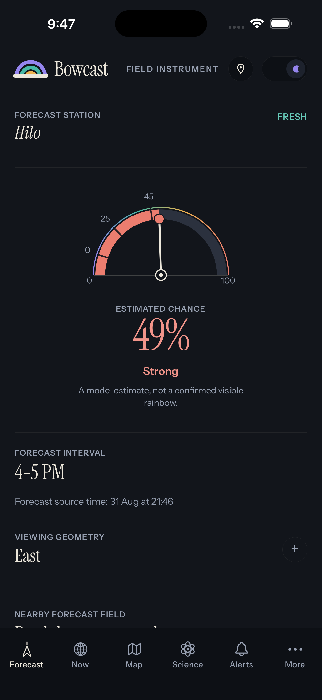
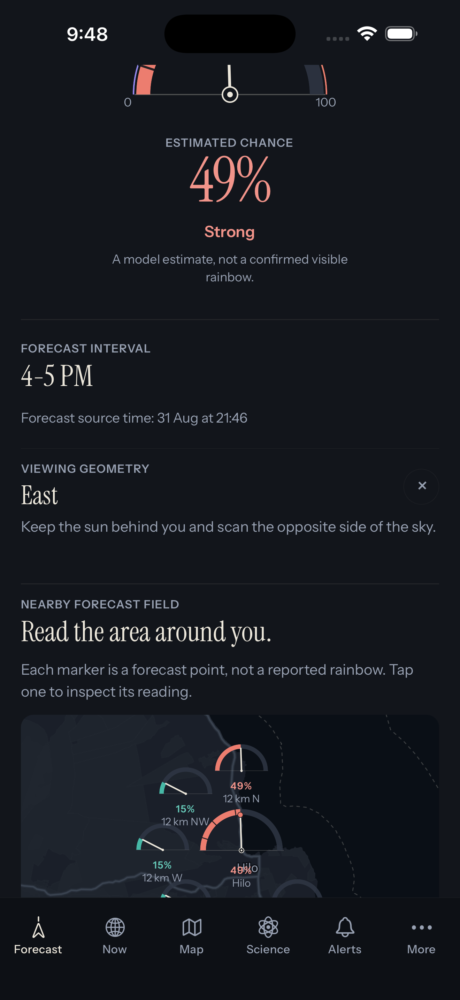
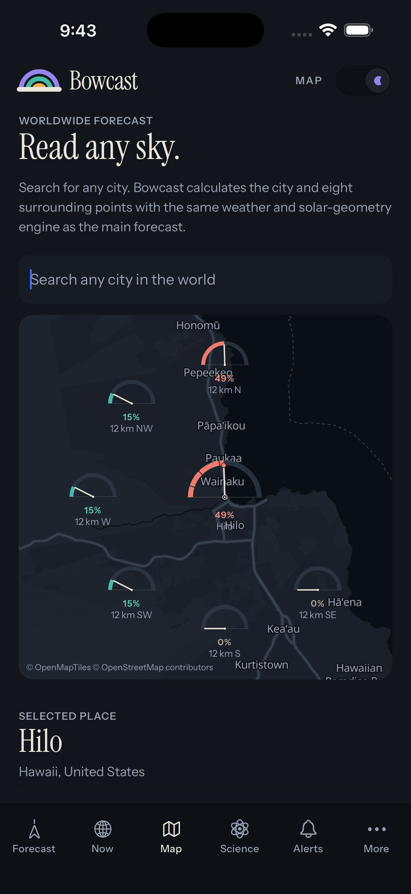
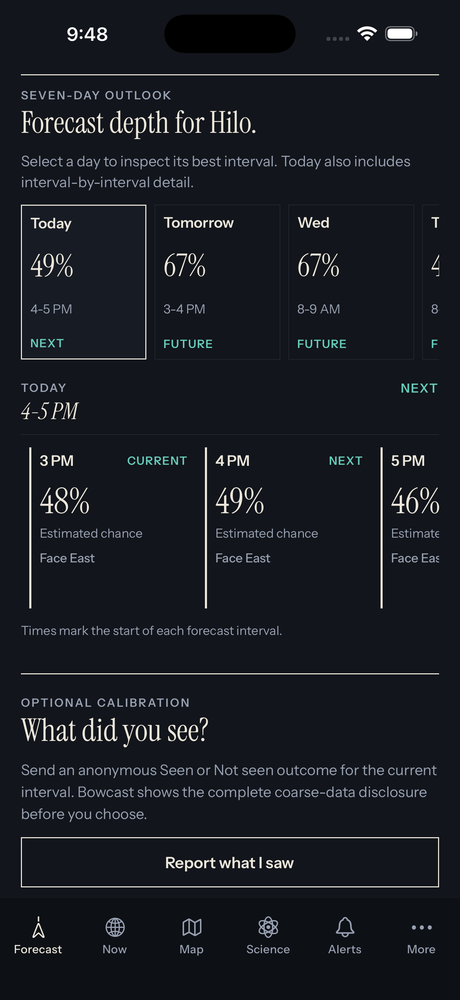
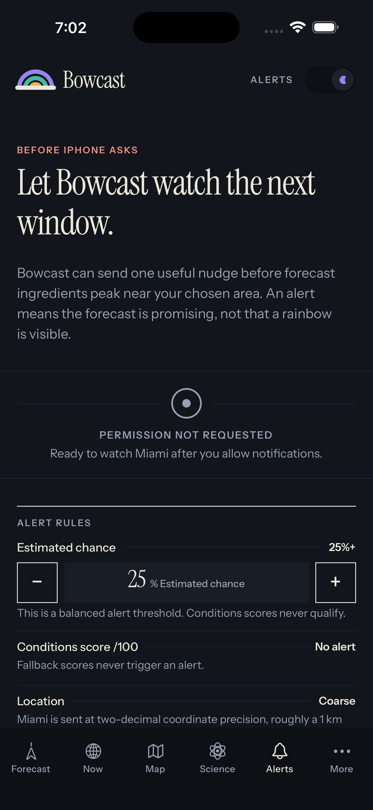
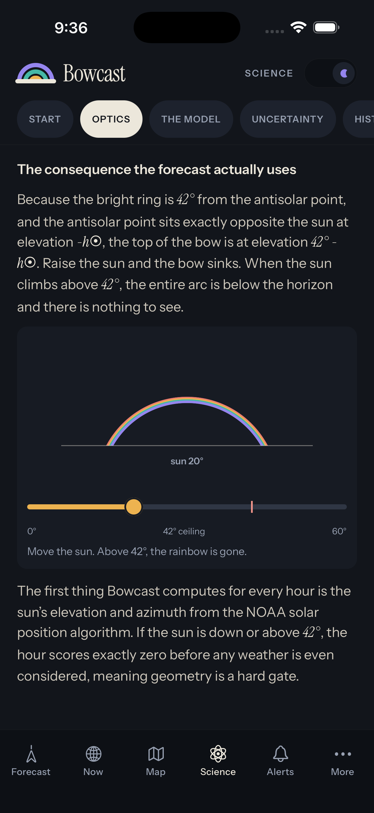
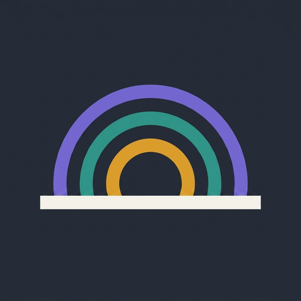

Bowcast press kit
Everything needed to write about Bowcast accurately: what it is, what it claims and does not claim, screenshots, the icon, and a boilerplate. Free to use without asking.
What Bowcast is
Bowcast is a rainbow forecast. For any place on Earth it works out when falling rain and low sunlight may share the same sky, hour by hour and seven days ahead, and which direction to face when they do. It exists as a website at bowcast.app and as a free iPhone app on the App Store, released on 10 September 2026. Both read the same forecast engine.
It is not a weather app with a rainbow icon on it. It forecasts one thing, and it labels that forecast as an estimate, because it is one.
Facts
- Name
- Bowcast (App Store listing: Bowcast: Rainbow Forecast)
- Platforms
- iPhone (iOS 16.4 or later) and the web at bowcast.app
- Price
- Free. No ads, no paywall, no account. Optional donations on Ko-fi unlock nothing.
- Coverage
- Worldwide. Any place can be searched; 66 cities also have standing forecast pages.
- Horizon
- Seven days, interval by interval; 15-minute resolution today where the provider supplies it.
- Method
- About 40 ICON-EPS ensemble members from Open-Meteo, each tested individually for liquid rain lit by a sun below about 42 degrees, weighted by direct sunlight. Solar position is computed locally to the minute.
- Alerts
- iPhone: background notifications at a threshold the reader chooses, 5% to 95%. Website: notifications while the map tab is open.
- Calibration
- Optional, anonymous "Seen" or "Not seen" reports with coordinates rounded to about a kilometre. No account, no device identifier.
- Location
- Requested only when the reader taps to use it. Any place can be named instead. The app never asks for background location.
- Developer
- Shamseddin Alsheikh, solo, building it with AI, donation-supported.
- Released
- Website July 2026. iPhone app 10 September 2026.
What the numbers mean, and do not
The headline value is labelled Estimated chance. It is the weighted share of ensemble members that produced sunlit rain for that place and interval. It is not a calibrated observed frequency: nobody has yet measured how often a Bowcast 40% becomes a visible rainbow, including its developer. The anonymous reports exist to close that gap, and no reliability table will be published until at least 150 usable reports have been gathered across at least six regions.
When ensemble data is unavailable the app shows a Conditions score /100 instead. It ranks how favourable conditions look and is never a percentage.
The viewing direction and the timing window are geometry, not chance. They never raise the number. A forecast says the ingredients may align; it does not promise a rainbow.
Why it exists
Rainbow prediction has serious prior work: Businger and colleagues' 2021 Hawaii rainbow climatology and the RainbowChase app that came from it, Carlson et al. 2022, and Liu et al. 2023. Those tools lean on radar, which answers "is one possible near me right now" and is excellent at it. Radar cannot see seven days ahead, and it does not tell liquid rain from snow. Bowcast starts from ensemble forecasts instead, so it can answer "when this week, and how confident", and it converts snowfall to water equivalent at ingestion so frozen precipitation never passes as rain. That is a different question, not a better answer to the same one.
The method, with every constant generated from the same source the engine runs on, is at bowcast.app/science.
Screenshots
iPhone captures at 1320 × 2868, dark theme, real readings from Hilo, Hawaii on 31 August 2026 (a strong day chosen from the worldwide ranking). Click any image for the full-size file.
{kind=link}

{kind=link}

{kind=link}

{kind=link}

{kind=link}

{kind=link}

Download all six, plus the icon and wordmark (zip, about 2 MB)
Icon and wordmark

The icon is the mark on the app's dark ground. Please do not recolour the arcs, add an outline, or set the mark on a gradient.
Boilerplate
Bowcast is a free rainbow forecast for iPhone and the web. For any place on Earth it works out when falling rain and low sunlight may line up, hour by hour and seven days ahead, and which way to face when they do. Its estimates come from about forty ensemble weather members and the geometry of the bow, are labelled as estimates rather than probabilities, and are being calibrated by anonymous sighting reports from readers. No account, no ads, no tracking. bowcast.app
Story angles that hold up
- Lead time. The rainbow tools we know of are radar nowcasts. Bowcast forecasts a week out from ensemble members, which is the difference between "look now" and "plan the walk on Thursday".
- It shows its work. The percentage is labelled an estimate, the fallback score is never a percentage, and the science page is generated from the engine's own constants so the documentation cannot drift from the model.
- Citizen calibration. Readers file anonymous Seen or Not seen reports; the standard for publishing a reliability table is written down in advance.
- One person, no venture money, and AI in the loop. Built by a solo developer who directs AI to write most of the code and says so, funded by small donations, with the iPhone app paid for by readers who wanted it.
Angles to avoid, because they are not true: that Bowcast "predicts rainbows with X% accuracy" (nothing is calibrated yet), that it is "more accurate than" any other tool (unmeasured), or that a published nine-in-ten post-rain figure applies everywhere (it came from one site in ZhaoSu, China).
Contact
Email i@shamseddin.net for interviews, additional captures, or a reading for a specific place and date.